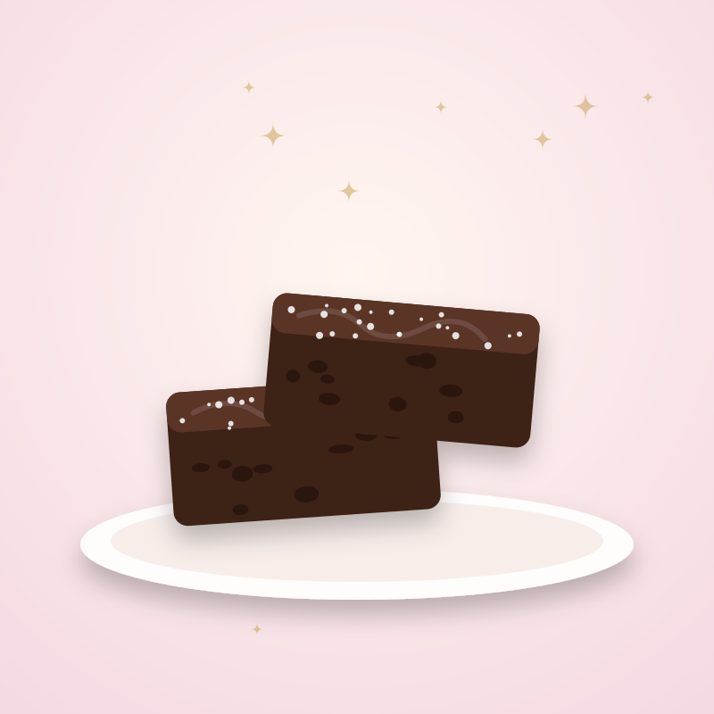

Hecho a mano
Los postres se preparan en casa, sin prisa y con dedicación.
La historia detrás de The Bliss Spot.
The Bliss Spot nace de mi amor por preparar postres. Me gusta hacer donas, pasteles sencillos, flanes y brownies caseros, y disfrutar de cada paso: mezclar, hornear, decorar.
Cocinar dulces también es mi manera de despejar la mente y quedarme un rato con algo que me hace feliz. Crear algo con mis propias manos y verlo llegar a la mesa de otras personas es lo más bonito de este proyecto.
Aquí cada postre se prepara en casa, con cariño, pensando en que acompañe un momento especial.

Hacer un postre es hacer una pausa dulce, y compartirlo la vuelve todavía más bonita.The Bliss Spot
Tres ideas sencillas que están en cada postre.
Los postres se preparan en casa, sin prisa y con dedicación.
Hornear es un momento propio para despejar la mente y crear.
Mini donas, pasteles sencillos, flanes y brownies para cada antojo.
Mira el menú y arma tu pedido cuando quieras.